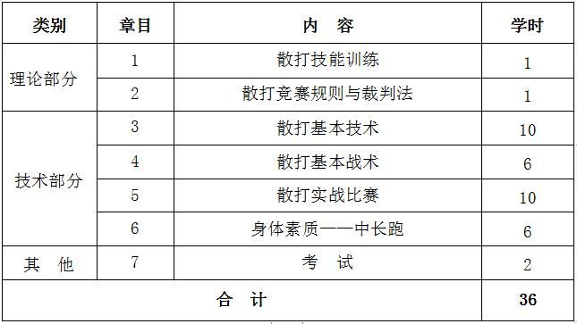

课程管理
|
课程名称 |
公共体育--散打（Ⅱ） |
课程代码 |
TX031109 |
|
课程类型 |
√通识课 □学科（专业）基础课 □专业发展课 |
课程性质 |
√必修课 □选修课 |
|
开课单位 |
体育学院 |
适用专业 |
非体育专业 |
|
总学时数 |
36 |
周学时数 |
2 |
|
课程学分 |
1 |
编 写 人 |
李胜恒 |
|
编写时间 |
2017.07.20 |
审 批 人 |
刘其龙 |
一、教学目的
本课程以散打运动为主要锻炼形式，兼顾全面的身体素质练习， 从而使学生掌握体育锻炼方法和技能，不断提高健康水平，为终身体育打好基础。本课程教学目的为：
1.使学生全面了解散打运动的产生和发展，掌握和运用该运动的基本知识、基本技术和技能，从而激发学生对散打运动的兴趣， 培养学生的爱好，使之成为终身锻炼的有效手段，从而推动散打运动的普及和发展。
2.全面发展学生灵敏、力量、速度、耐力等身体素质，改善身体机能， 提高学生的防身自卫能力，培养学生自觉锻炼的意识，为终身体育打下良好的基础。
3.注重武德教育，培养学生的道德情操，养成正确的竞争意识与良好的合作精神， 促进学生身心的健康发展，形成较强的社会适应能力。
二、重点与难点
（一）重点：散打摔法技术、防守技术、防守反击技术及散打基本战术的运用， 掌握正确的动作要领，领悟其技击原理，并能合理运用于实战比赛中。
（二）难点：防守反击技术；散打基本战术；散打实战比赛。
三、基本内容与要求
理论部分：
第1章 散打技能训练
1.1 散打技能的概念
1.2 散打技能训练的因素
1.3 散打技能的训练方法
1.4 散打技能训练的要求
（一）教学目的：通过教学使学生明确散打技能的概念，了解影响散打技能训练的主要因素， 掌握散打技能的训练方法和要求，并能够采用正确的方法进行训练，进一步提高散打技能水平。
（二）重点与难点：散打技能的训练方法与要求。
（三）基本内容：散打技能的概念；选择战机、选择动作、选择部位、心理等影响散打技能训练的因素；原地规范动作练习、结合步法动作练习、空击练习、不接触式的攻防练习、 模拟练习、打靶练习、条件实战练习、实战练习等散打技能的训练方法；散打技能训练的要求。
第2章 散打竞赛规则与裁判法
2.1 散打竞赛的组织
2.2 散打竞赛的编排
2.3 散打竞赛规则
2.4 散打竞赛裁判法
（一）教学目的：通过教学使学生了解散打运动的竞赛规则和裁判法， 掌握散打竞赛的组织与编排，学会欣赏散打比赛。
（二）重点与难点：散打竞赛的组织与编排；散打竞赛裁判法。
（三）基本内容：散打竞赛的组织与编排；散打竞赛规则；散打竞赛裁判法。
技术部分：
第3章 散打基本技术
3.1 摔法技术：夹颈过背、穿臂过背、抱腿前顶、抱腿别腿、接腿勾踢
3.2 进攻技术
3.3 防守技术：接触性防守、非接触性防守
3.4 防守反击技术：防拳反击、防腿反击、防摔反击
3.5 组合技术
（一）教学目的：了解各项技术的特点与攻防含义， 熟练掌握摔法、进攻技术、防守技术及组合技术，不断提高散打技术水平。
（二）重点与难点：摔法技术；防守技术及防守反击技术。
（三）基本内容：夹颈过背、穿臂过背、抱腿前顶、 抱腿别腿、接腿勾踢等摔法技术；进攻技术、防守技术、防守反击技术及组合技术。
第4章 散打基本战术
4.1 散打战术的设计原则
4.2 散打战术形式：直攻战术、佯攻战术、强攻战术、突袭战术、迂回战术、多点战术、边角战术、下台战术、 心理战术、体力战术等。
（一）教学目的：使学生了解散打战术的设计原则，并能够按照散打动作功能、攻防兼顾、灵活多变等原理设计战术，在此基础上熟练掌握各种散打战术形式， 为散打战术训练打下坚实的基础，从而不断提高散打技战术水平。
（二）重点与难点：实战比赛。
（三）基本内容：散打战术的设计原则；直攻战术、佯攻战术、 强攻战术、突袭战术、迂回战术等散打战术形式。
第5章 散打实战比赛
5.1 条件实战
5.2 模拟实战
5.3 教学实战
5.4 实战比赛
（一）教学目的：通过条件实战、模拟实战、教学实战等训练方法使学生熟练掌握各种散打战术，并能够熟练运用各种战术进行散打比赛，进一步提高散打技战术水平。
（二）重点与难点：实战比赛。
（三）基本内容：条件实战、模拟实战、教学实战、实战比赛等战术训练方法。
第6章 身体素质——中长跑
6.1 起跑和起跑后的加速
6.2 途中跑、终点跑
6.3 中长跑的呼吸
6.4 全程跑：1000米（男生）、800米（女生）
（一）教学目的：通过教学使学生掌握起跑和起跑后的加速、途中跑、终点跑等中长跑的基本技术，学会正确的呼吸方式，发展耐力素质，进一步增强心肺功能。
（二）重点与难点：途中跑技术；中长跑的呼吸。
（三）基本内容：起跑和起跑后的加速、途中跑、终点跑等基本技术；全程跑。
四、授课内容学时分配
五、考核方式：
（一）考核方式：现场测试。
根据教学目的和要求，本课程的考核在学期末进行，考核内容结合本学期教学内容进行。综合成绩＝平时成绩×30%＋考试成绩×70%， 其中平时成绩根据考勤、课堂表现进行评分，考试成绩＝技能考核成绩×70%＋身体素质成绩×30%。身体素质为每学期的必考项目，考试内容为男子1000米。
（二）考试内容：散打基本技术、身体素质（男子1000米）。
（三）评分标准 ：
1. 模拟实战
（1）测试方法：同一级别内，随机配对进行实战，配对的考生体重相差不得超过2kg。在擂台上进行实战。要求考生穿戴护具（拳套、护头、护胸、护裆、护腿），按照配对后的排列顺序， 序号奇数者为红方，穿红色护具；序号偶数者为黑方，穿黑色护具。双方实战（净打）3分钟。
（2）评分标准：考评员参照实战评分表（见表1），从实战中的胜负、临场技战术运用情况、意志品质以及对散打竞赛礼节的遵守等方面， 独立对考生进行综合评定，按100分制打分。
表1 模拟实战评分表
2.身体素质（男子1000米）：评分标准见表2。
六、教材与参考书目
（一）使用教材：
[1] 张瑞林. 散打. 北京：高等教育出版社，2006年12月.
（二）参考书目：
[1] 叶伟. 散打运动训练理论与实践. 北京：人民体育出版社，2004年10月.
[2] 李士英. 武术散打裁判必读. 北京：北京体育大学出版社,2001年.
[3] 王智慧.现代散打技法. 北京：人民体育出版社，2005年1月.
[4] 国家体育总局.中国体育教练员岗位培训教材（散手）. 北京：人民体育出版社，1999年10月.
[5] 全国体育院校教材委员会．中国武术教程（下册）．北京：人民体育出版社，2004年．
表1 身体素质考核评分标准

注：数据来源于国家学生体质健康标准（2014年修订）。